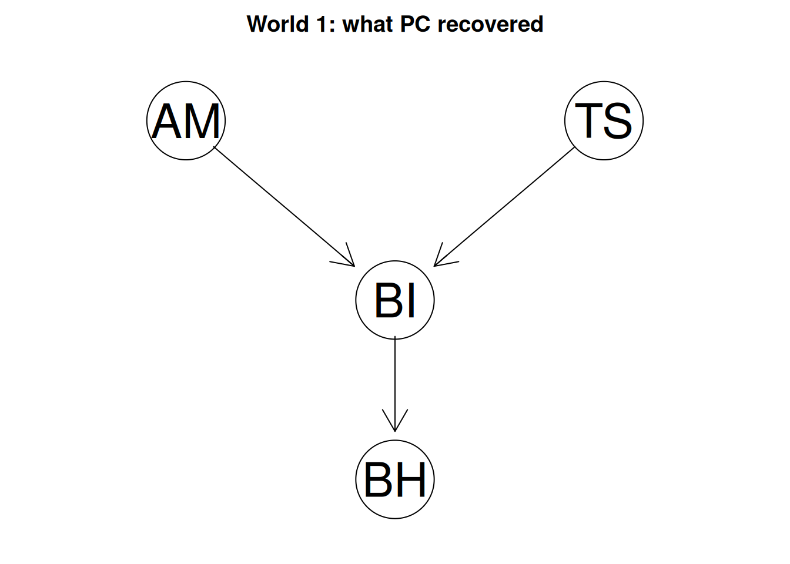
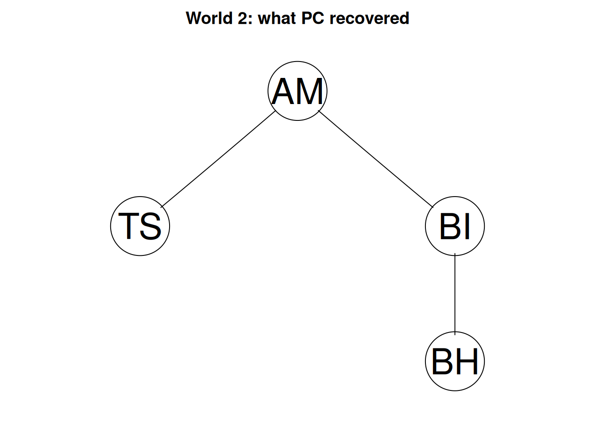
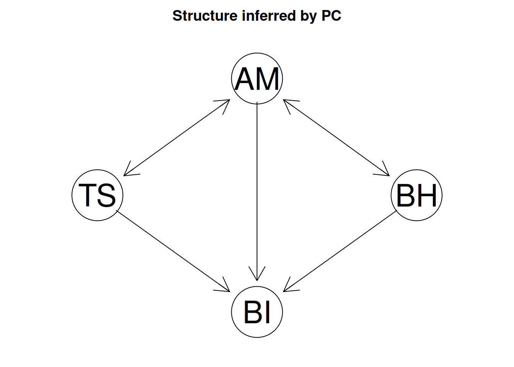

7 Causal Discovery
7.1 Weekly Readings
- Pearl, J. (2019). The seven tools of causal inference, with reflections on machine learning. Communications of the ACM, 62(3), 54–60. https://doi.org/10.1145/3241036
- Vowels, M. J. (2022). A Causal Research Pipeline and Tutorial for Psychologists and Social Scientists (Sections 1-4 and 9). arXiv. https://doi.org/10.48550/arXiv.2206.05175
7.2 Tutorial
Suppose you have a correlation matrix based on observational (i.e., non-experimental) data and nothing else. How much can you say about what causes what?
The standard answer that we learn in statistics courses is “nothing”: correlation does not equal causation. The surprising answer is “sometimes quite a lot”. Certain causal structures leave distinctive traces in the pattern of correlations, and those traces can be read back off the data, granted we are willing to make some assumptions. Methods that do this are called causal discovery methods.
In this tutorial, we will explore how to use causal discovery (based on conditional independence testing) to go beyond correlation and infer causal relationships from observational (i.e., non-experimental) data.
Software implementations of causal discovery methods typically output an adjacancy matrix to represent the causal structure, but they are hard to read. The function below prints a graph as a list of edges instead. Run it once; we use it throughout.
edges_of <- function(fit) {
# coerce the fit into an adjacancy matrix
m <- as(fit, "amat")
# store the variable names
nms <- colnames(m)
# initialize empty vector to collect edge strings
out <- character(0)
# loop over every ordered pair of variable names
for (i in nms) for (j in nms) {
# Skips the diagonal (since a variable has no edge to itself)
if (i == j) next
# pcalg convention: m[i, j] == 0 and m[j, i] == 1 means i -> j
# Detects a directed edge
if (m[j, i] == 1 && m[i, j] == 0) out <- c(out, paste(i, "->", j))
# Detects a undirected edge
if (m[i, j] == 1 && m[j, i] == 1 && i < j) out <- c(out, paste(i, "--", j))
}
out
}7.3 Part 1: Three patterns, Three Traces (30 min)
When thinking about what traces can be used to infer the causal structure, it helps to distinguish between a few different causal structures containing 3 variables, visualized in the directed acyclic graphs (DAGs; i.e., a causal graph without cycles) below.
In this part of the tutorial, we will simulate data for each one, so that we know the true answer (“ground truth”) and look at what shows up in the correlations. More specifically, we will take a look at two metrics for each pattern:
- the plain correlation between
XandY; - the correlation between
XandYafter accounting forZ, the partial correlation.
“Accounting for Z” means: within groups of people who have the same value of Z, are X and Y still related? The same thing is sometimes expressed using a few different phrasings: (a) “controlling for Z”, (b) “conditioning on Z”, or (c) “holding Z fixed”.
7.3.1 Pattern 1: a chain
In a chain, a third variable Z sits between X and Y. In other words, Z is a mediator in the causal relationship between X and Y. As an example, teacher pressure lowers motivation, and motivation drives behaviour.
set.seed(6)
n <- 5000 # large, so that sampling noise does not obscure the pattern
a <- 0.6 # strength of every arrow, on a correlation scale
chain <- local({
X <- rnorm(n)
Z <- a * X + rnorm(n, sd = sqrt(1 - a^2))
Y <- a * Z + rnorm(n, sd = sqrt(1 - a^2))
data.frame(X = X, Z = Z, Y = Y)
})
cor(chain$X, chain$Y) # related?[1] 0.3574731[1] -0.002474125From the output, we can tell that X and Y are correlated, and that the correlation disappears once we account for Z. The intuitive explanation for this is that if the only route from X to Y runs through Z, then holding Z fixed blocks (i.e., cuts the flow of association) the route.
7.3.2 Pattern 2: a common cause
With a common cause, a third variable Z causes both X and Y, but there is no causal relation between the latter two. In other words, Z is a confounder in the relationship between X and Y.
[1] 0.3558507[1] 0.007863247As an example, we may see that the number of shark attacks and the number of ice cream sales move together (when one tends to be higher, the other tends to be as well), which is all explained by the amount of sunny days. And once we account for the amount of sunny days, the correlation between shark attacks and ice cream sales dissappears, as the pathway is blocked.
Note that we practically get the same two numbers as the chain: both produce a correlation that vanishes when you account for the middle variable. This is because the data cannot tell apart a chain from a common cause.
7.3.3 Pattern 3: a common effect
When there is a common effect, two variables X and Y both cause a third variable Z, where Z is referred to as a collider. Note that the arrows are pointed the opposite way as what we saw in pattern 2. As an example, natural talent and working hard both contribute to getting a good exam grade; but the former two do not causally impact one another.
[1] 0.0155854[1] -0.5466282Among students who got a good grade, someone with little natural talent must have worked hard, and someone who did not work hard must have had natural talent. So learning one tells you something about the other. In more formal words, when we account/control for exam grades, we create an association between the two previously uncorrelated variables. Here, the initial state is blocked and by accounting for the collider we unblocks/opens up the pathway.
This is exactly the opposite of what we saw for a common cause, where we removed the correlation by accounting for the third variable.
7.3.4 The three traces side by side
trace <- function(d) {
c(r_XY = cor(d$X, d$Y),
r_XY_given_Z = pcor.test(d$X, d$Y, d$Z)$estimate)
}
patterns <- data.frame(
pattern = c("Chain: X -> Z -> Y",
"Common cause: X <- Z -> Y",
"Common effect: X -> Z <- Y"),
rbind(trace(chain), trace(fork), trace(collider))
)
print(patterns, digits = 2, row.names = FALSE) pattern r_XY r_XY_given_Z
Chain: X -> Z -> Y 0.357 -0.0025
Common cause: X <- Z -> Y 0.356 0.0079
Common effect: X -> Z <- Y 0.016 -0.5466The former two patterns are statistically indistinguishable. The third has a different statistical trace: unrelated on their own, but related once we account for the third variable.
This assymetry between the chain and common cause on the one hand and the common effect on the other is the basis of constraint-based causal discovery.
Quiz
You find that X and Y are correlated, and that the correlation disappears when you account for Z. Which pattern is it?
You find that X and Y are uncorrelated, but become correlated once you account for Z. Which pattern is it?
Accounting for a common effect can create an association where there was none.
Accounting for the third variable \(Z\) blocks a chain (pattern 1) and blocks a common cause (pattern 2), and unblocks a collider (pattern 3).
7.4 Part 2: Can the algorithm find a structure we hid? (30 min)
Peter Spirtes and Clark Glymour operationalized this assymetry between the three patterns and developed the PC algorithm, which tests every pair of variables under every relevant conditioning set, deletes edges whenever it finds independence, then orients arrows using the collider traces from Part 1.
But can algorithmns actually find a structure we hide? And under what conditions? To address these questions, we will hide a structure in simulated data and see whether the algorithm can retrieve this correctly.
We will simulate graphs with four variables that were present in the Zhao (2025) data (introduced in Week 6 Machine-Learning Informed Theory Construction; we will come back to the real data in Part 3):
AM(autonomous motivation)TS(teacher pressure)BI(behavioural intention)BH(sports behaviour).
Below we create a simple function for running the PC, algorithm. We can see that the pc function only requires the correlation matrix and sample size rather than the raw data (see the suffStat line).
7.4.1 World 1: a structure containing a common effect
Let us first create a fictional structure that we call World 1, containing a common effect, with the causal relations: AM -> BI, TS -> BI, BI -> BH. Motivation and teacher pressure both cause intention, and intention causes behaviour. Note that BI is a common effect of AM and TS.
[1] "AM -> BI" "TS -> BI" "BI -> BH"
We can see that PC recovers each arrow correctly. The algorithm found the common effect at BI using the trace from Part 1, and once those two arrows were fixed, the direction of BI -> BH followed: pointing it the other way would have created a second common effect at BI, which the data rule out.
7.4.2 World 2: a pure chain
Let’s now consider another fictional causal structure, called World 2, with the causal relations: TS -> AM -> BI -> BH. These comprise the same four variables, but now with a chain structure rather than a common effect.
[1] "AM -- TS" "AM -- BI" "BH -- BI"
We can see that PC correctly recovers the skeleton (i.e., undirected graph showing which variables are statistically associated), but cannot tell which way the arrows point. This indeterminacy of the complete causal structure (including orientation) follows directly from what we learnt in Part 1: a chain running left to right and a chain running right to left produce identical correlations, so no amount of data can separate them. Without a common effect, there is no trace to exploit.
7.4.3 How many structures fit equally well?
Let us figure out how many causal structures can explain the correlations that were found in the data simulated based on the structures of World 1 and World 2.
[1] 1[1] 4We can see that PC can pin it down to a single structure for World 1, whereas it leaves several different possible causal structures for World 2.
Quiz
PC recovered World 1 exactly because
In World 2, PC left the edges undirected because
A graph with undirected edges means the analysis failed.
- The PC algorithmn constructs the skeleton and then orients any collider structures and other compelled edges to construct a DAG. Because we are limited by these collider structures for orientation (we cannot distinguish between a chain and common cause as seen in Part 1; e.g., World 2), the algorithm returns a completed partially directed acyclic graph (CPDAG; completed because it contains every single edge orientation that can be deduced)
- A CPDAG is consistent with multiple candidate DAGs (where all edges are oriented). These DAGs are statistically indistinguishable. We call this group of DAGs the Markov equivalence class. In World 1, the MEC consisted of one structure; in World 2 it consisted of several structures.
7.5 Part 3: Your theory meets real data (30 min)
The PC algorithm uses statistical rules of thumb to construct DAGs; it does not know your underlying theory. At this point you may ask: Do the DAGs constructed by pcalg::pc() make sense? If you used only expert knowledge, what DAG would you construct? And does this DAG have the causal implications that allow it to be recovered by algorithms like PC?
We now turn to the real Zhao (2025) dataset, using the same four constructs as we simulated data for in Part 2:
- AM: Autonomous motivation, as an operationlization of one of the fundamental needs.
- TS Teacher pressure (teacher stress), as an operationalization of “external events”
- BI: Behavioral intention, which we will interpret as an operationalization of integration.
- BH: Sports behavior, as a context-specific operationalization of healthy development.
These are imperfect matches for the theoretical concepts, but for the purpose of a tutorial - that is fine. All four are mean scores aggregrated across questionnaire items, with higher values indicating higher levels of the corresponding construct.
name type n missing unique mean median mode mode_value sd v min max
1 AM numeric 290 0 31 4.6 4.6 4.6 NA 1.4 NA 1 7
2 TS numeric 290 0 21 2.9 2.8 2.8 NA 1.1 NA 1 7
3 BI numeric 290 0 16 4.9 5.0 5.0 NA 1.3 NA 1 7
4 BH numeric 290 0 13 4.2 4.5 4.5 NA 1.4 NA 1 7
range skew skew_2se kurt kurt_2se
1 6 -0.43 -1.49 3.2 5.6
2 6 0.41 1.43 2.8 4.8
3 6 -0.48 -1.68 3.5 6.2
4 6 -0.22 -0.76 2.8 5.0 AM TS BI BH
AM 1.00 -0.25 0.51 0.3
TS -0.25 1.00 -0.31 -0.1
BI 0.51 -0.31 1.00 0.4
BH 0.30 -0.10 0.40 1.07.5.1 Step 1: Write down your theory
Before looking at any output of the algorithm, we should commit and make our hypothesized/theoretical DAG explicit. Shortly discuss what you think is the DAG is in this substantive setting and edit the code (theory line) below accordingly.
7.5.2 Step 2: Ask what your theory predicts
At this point, we want to see what predictions our theory actually makes (i.e., what causal implications it has).
The symbolic notation X _||_ Y | Z should be read as “X is unrelated to Y once you account for Z”.
Write down the predictions in words.
7.5.3 Step 3: Test the predictions
Given that the theory is true, can we be expected to recover the correct causal structure given that the assumptions of PC hold? To explore this, we will test our predictions
| estimate | p.value | 2.5% | 97.5% | |
|---|---|---|---|---|
| AM || BI | 0.505 | 0.000 | 0.415 | 0.592 |
| BH || TS | AM | -0.031 | 0.604 | -0.146 | 0.085 |
| BI || TS | -0.314 | 0.000 | -0.415 | -0.207 |
Each row reports an estimate of the (partial) correlation your theory says should be zero, together with a p-value and a confidence interval. An estimate far from zero, with an interval excluding zero, means the data contradict that particular prediction.
Interpret the result in substantive terms.
7.5.4 Step 4: Let the data propose a structure
Now run PC on the same data and compare.
[1] "AM -- TS" "AM -> BI" "AM -- BH" "TS -> BI" "BH -> BI"
7.5.5 Step 5: Compare, and account for the differences
Work through these questions in your group and write your answers down.
- Which connections do the two graphs agree on? These are the claims supported both by your theory and by the data.
- Which edges does PC include that your theory omits? Is there a plausible mechanism you had not considered, or a common cause that is missing from both?
-
Which edges does your theory include that PC removes? Look up the relevant test in
localTests()output. Is the association truly absent, or merely too small to detect at this sample size? - Where PC points an arrow, do you believe it? Check whether the direction is substantively possible. An implausible arrow can be suggestive of an assumption violation.
- Where PC leaves an edge undirected, what would settle it? Can we infer it using time order, an experiment, or an additional variable?
Several assumptions are needed to infer the causal graph from statistical associations alone. With any causal discovery algorithm, the result is only as good as these assumptions, and with real-world data, some may likely be violated.
- Causal Markov Condition: Whatever the graph blocks really is statistically unrelated in the data.
- Faithfulness: Whatever is statistically unrelated in the data really is blocked in the graph. In practice, this implies that no two causal paths cancel each other out exactly. For instance, a positive direct effect offset by a negative indirect effect could look like no effect at all.
- No hidden confounders: every common cause of the measured variables is itself measured.
- No cycles in the causal graph: causation runs one way through the graph, and nothing returns to itself.
-
Linearity and normality (because of independence test chosen):
gaussCItestreads independence off partial correlations, which capture linear relations only.
7.6 Concluding thoughts
Throughout this tutorial, we have learnt that the graph produced by the PC algorithm cannot be taken, at face value, as the “true” causal structure. A discovered graph is an estimate that is built on assumptions you can substantively consider but mostly cannot check empirically. Expert knowledge still plays an important role and is needed to interpret the output, informing us when the model output simply cannot be true (e.g., teacher pressure influencing age) or when core assumptions are likely violated. Causal discovery is an exploratory tool that can, under certain conditions, provide us useful information in formulating theories (e.g., do our theory’s predictions allign with the data?) and help us think about what experiments to prioritize. But perhaps most importantly, these causal tools force us to make the assumptions about causality (in our theories) explicit.
Think back on last week’s machine learning analyses, for example. Do you think that all of the important predictors of the outcome you chose are in fact causes of it? Or is it possible that some of the predictors are caused by your chosen outcome, or correlated with it for irrelevant reasons?
7.7 Homework
Apply the causal discovery pipeline from this tutorial (Part 3) to the dataset you prepared for last week’s machine learning analysis:
- Write down your theoretical DAG, and list the conditional independencies it implies.
- Test those implications with
localTests(). - Run the PC algorithm on the same data, and compare the two graphs.
Interpret the results you’ve obtained, and reflect on your previous theory (the DAG). Do you see any causal links that are not in your theory-based DAG but should be? Did you learn anything new about the direction of effects? Are any of the links counterintuitive or wrong? Which assumption do you think is responsible? Write your reflections down to become part of your final report.